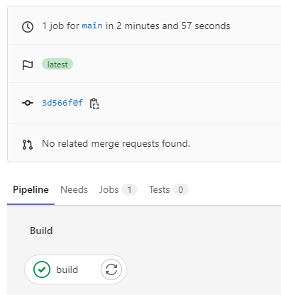

自動リリース
Tweetホーム > 個人開発したことまとめ > 自動リリース
自動リリース
ローカルのPCで作成したプログラムを手動でサーバーに配置していたが、手間を省くためにGitLabにpushしたらデプロイは自動で行ってくれる仕組みを構築した。
どんな仕組み？
これまで開発した Go/Python の bot は上図の仕組みで自動リリース機能を実装。自分の作業は上図の①のgit pushのみ。②～④は GitLabが自動的にやってくれるようになっている。
③のgitlabからssh接続する部分については、この記事を参考にしました。
Java の Webサイトは上図のように、dockerを使わず、 Gitlab 内で maven のコマンドを実行してwar ファイルを生成し、 サーバにwarファイルを転送する方式。自分の作業は上図の①のgit pushのみである点は bot と同じ。
GitLabは、.gitlab-ci.ymlに記載したコマンドを自動的に実行してくれる。以下が実際の .gitlab-ci.yml の中身。
.gitlab-ci.yml(Go)
Goのbuild、docker build、ssh接続、docker pushすべての作業を1ステージで行っている。
GitLabのパイプラインはこんな風になる。

.gitlab-ci.yml(python)
pythonのbuildを行ってartifactsに保存するステージと、docker build、ssh接続、docker pushするステージの2ステージに分けている。分けた理由は後述。
GitLabのパイプラインはこんな風になる。

.gitlab-ci.yml(Java)
warファイルを生成してartifactsに保存するステージと、ssh接続してwarファイルを所定のディレクトリに格納するステージの2ステージに分けている。
GitLabのパイプラインはこんな風になる。
ぶつかった壁とか学んだこととか
①python のbot を詰め込んだ Docker が起動しない
pythonの自動リリースは、最初は1ステージでbuild⇒docker push⇒ssh接続⇒docker pullすべて行おうとしていたが、以下のエラーが発生した。
このエラーの原因はアーキテクチャーの違い（参考）。
python で Pyinstaller を使って軽量なコンテナイメージを作ろうとした際、最初は Alpine を使おうとしていた。コンテナに乗せる前に python のコードを build する必要があるが、 python が入っていないと build できないため、 GitLab のパイプラインで使用するイメージは python:3.10 を使って、出来上がった成果物を alpine で動かそうとしていた。python:3.10 は debian形式なので、そこで生成した成果物を Alpine で動かすことができず、先のエラーが発生していた。
python が入っている alpine のイメージもある（python:<version>-alpine）ため、このイメージを使用してビルドしてもいいのだが、debian も使ってみたかったので、bot を稼働させるイメージを Alpine から debian に変更することでうまく動くようになった。
②設定の外部ファイル化(json, .env)
自動リリース前は手動でリリースしていたのでパスワードとかコードに直書きしていた。GitLab で管理するなら外部ファイル化しないとまずいので対応。
twitter API の認証情報とか postgres の接続情報などを外部ファイル化した。 Go, python 共通で使うものなので json で保存。 postgres の接続情報は Java でも使っているが、既に property ファイル化していたため、Goとpythonはjson、Javaは property ファイルのままにしている。
json ファイルは手動で linux サーバに配置している。これは初回のみの作業。
また、json ファイルの格納場所はローカル開発環境とサーバで異なるので、格納場所を環境変数で設定するようにした。
Go の場合
godotenv というライブラリを使用している。 .env 形式のファイルを読み込んで環境変数を設定してくれるもの。
.env ファイルの中はこんな感じ
[環境変数名]="[設定値]"
.env に設定された内容を環境変数に設定するGo のコードは以下の通り。
これで.env ファイルに記載している環境変数が設定される。
この後「val := os.Getenv("[環境変数名]")」で環境変数に設定された値を取得できる。今回の場合はjsonファイルのパスが取得できるので、os.ReadFile(val) で json を読み込むことができる。json を読み込みんだ後は、Go の標準の 「encoding/json」の json.Unmarshal() で構造体に変換。
サンプルコードは以下。
python の場合
python-dotenv という外部ライブラリを使用。Go の godotenv と使い方は同じで、 .env ファイルを読み込んで環境変数を設定してくれる。
サンプルコードは以下
6行目の load_dotenv() で .env ファイルの内容を環境変数に設定。9行目の os.getenv("[環境変数名]")) で環境変数を読み込める。今回の場合はjsonファイルのパスが取得できるので、 jsonFile = open(str(os.getenv("[環境変数名]")), "r", encoding="utf-8") でファイルを開き、 json.load(jsonFile) で json 読み込み。これは python の標準ライブラリ。
③DOCKER_HOST: tcp://docker:2375って何？
.gitlab-ci.yml の docker push ⇒ ssh接続 ⇒ docker pull するステージで以下の記載があるが、どこかのHPに書いてあるコードをそのまま使用していたため、なぜこれが必要なのかがわかっていなかったので今回それを整理。
以下、整理した内容
GitLab の CI/CD の中で dockerコマンドを実行するには、いくつか方法があるが、今回使用したものは Docker in Docker(dind と呼ばれている)の構成になっている（参考）。
dind とはDockerコンテナ内にDockerを用意する技術の事で、下図のようにdockerが入れ子状態になっています。

※図はDockerコンテナ内からDockerを使うことについてから引用
Docker Engine は下の図のように、主に以下の３つのコンポーネントで構成されており、Docker CLI が Dockerホストの中にあるか外にあるかによって、Dockerデーモンとの通信方式は異なります。
- Docker CLI：docker run や docker build などの Dockerコマンドを実行するコマンドラインツールです
- Docker Engine API：プログラム（クライアント）とデーモンとの間での通信方法を定義し、何をなすべきかを指示する。
- Dockerデーモン：Docker Engine API が呼び出されるのを待ち受けています。
※図はさわって理解する Docker 入門から引用
gitlab-ci.ymlに記載したDOCKER_HOST は docker デーモンの URL を指定します。Docker クライアントでは、デフォルトは unix:///var/run/docker.sock です。
下記の構成を取った場合のserverのエンドポイントは（非SSLの場合）tcp://docker:2375 なので、DOCKER_HOST を tcp://docker:2375 とすることでServerに対してdockerコマンドを発行している。

④ssh 関係コマンド
- eval "$(ssh-agent)"：ssh-agentの起動。「ssh-agent bash」でも起動できるがこれだと環境変数を設定する必要があって面倒（参考）。eval "$(ssh-agent)" であれば、 ssh-agent を実行して出力された結果を実行してくれるので楽。
- ssh-add "$ID_RSA_DEPLOY"：秘密鍵をssh-agentに登録
- - mkdir ~/.ssh/ && chmod 0700 ~/.ssh
- ssh-keyscan -p$PORT -H sagamax.cyou > ~/.ssh/known_hosts
⇒これいる？と思ったけど、おそらく「Are you sure you want to continue connecting (yes/no)?」を聞かれないようにするため。
ssh-keyscan コマンドは複数のホストのsshの公開鍵を収集するためのコマンド。これで収集した公開鍵を known_hosts に登録することで yes/no を聞かれないようにしている。
ssh
- SSH-KEYSCAN(1)
- 【SSH】ssh-agent の使い方
- ssh-agentを使って公開鍵認証方式のsshパスワード入力を省略する方法
- SSHについて調べてみた
- ssh-keyscan コマンドがあるらしい
- 【SSH】ssh-agentの使い方を整理する
- Gitlab CI-リモートサーバーにSSH経由でデプロイ
- deployment - Gitlab CI：SSH経由でリモートサーバーにデプロイする
- GitLab Runnerで任意のSSH接続を行いたい
Gitlab
Docker
- OSX - Gitlab-runner "error during connect: Get http://docker:2375/v1.40/containers/json: dial tcp: lookup docker on 192.168.65.1:53: no such host""
- DOCKER_HOSTを指定してVM外からdockerを操作できるようにする
- Compose CLI 環境変数
- リモートサーバーの中のDockerにローカルから接続する
- Dockerコンテナ内からDockerを使うことについて
- Use Docker to build Docker images
- Services
- GitLab の CI/CD で Docker in Docker
- さわって理解する Docker 入門
- Docker Engineとは何か
- Docker Engine API について